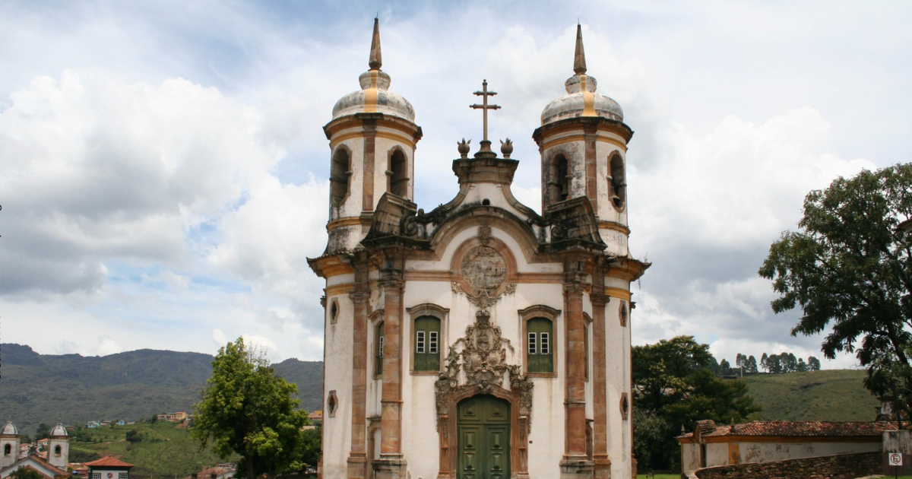
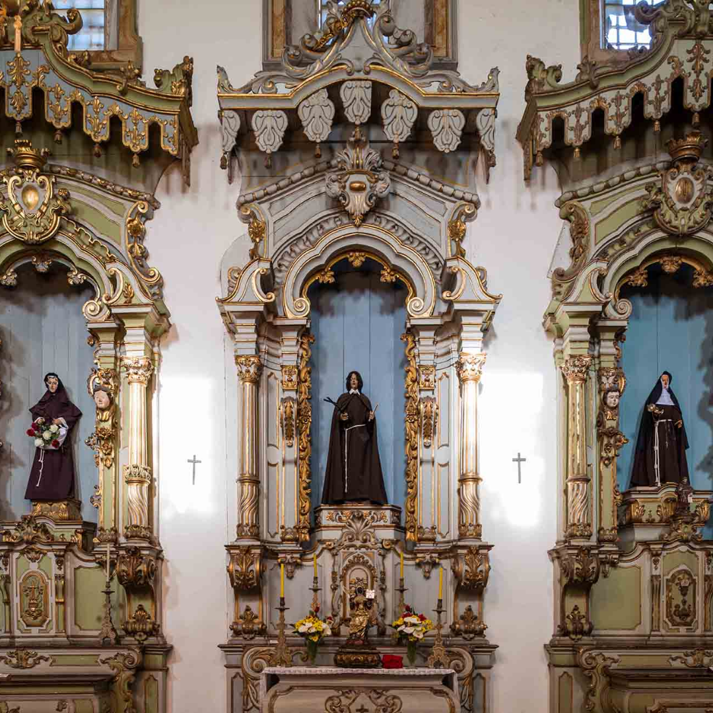
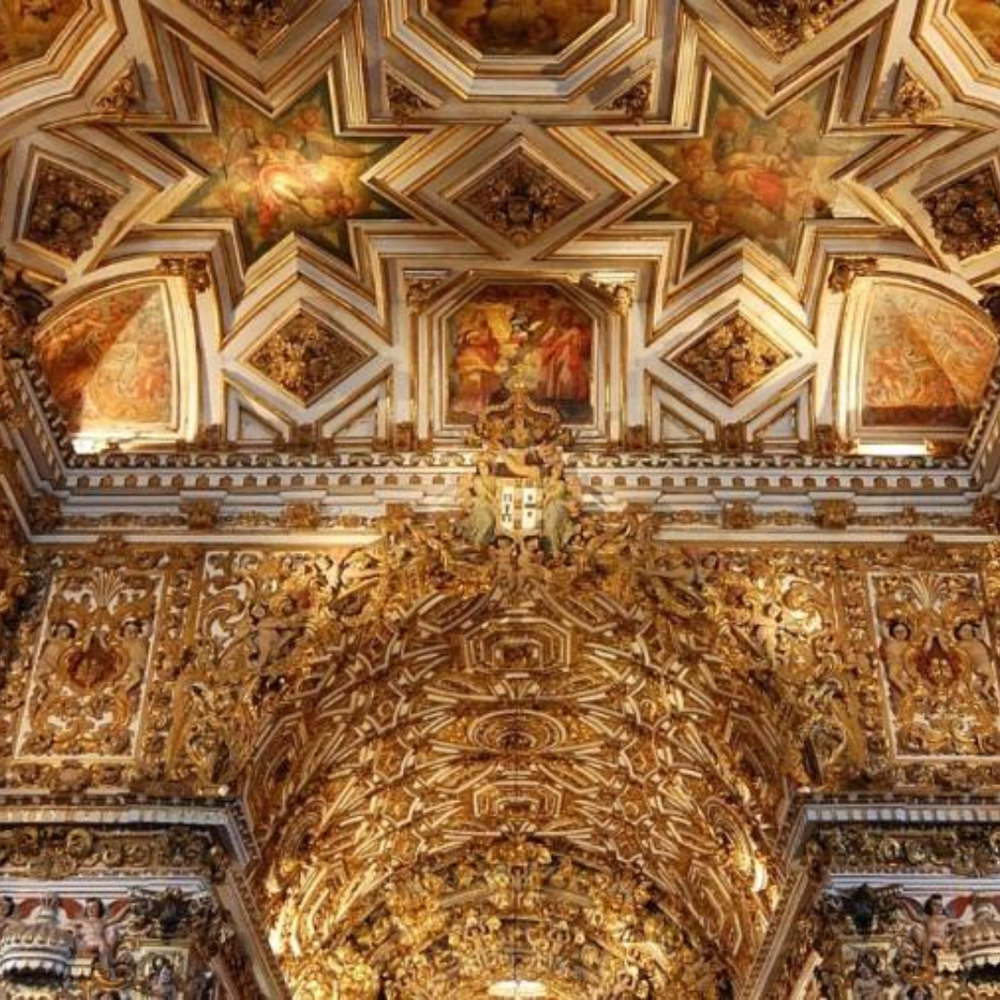

Igreja de São Francisco de Assis

Ouro Preto, Minas Gerais • Brasil
★★★★☆
Sobre o destino
📍 Largo de Coimbra, s/n, Centro, Ouro Preto - MG, 35400-000, Brasil.
A Igreja de São Francisco de Assis, em Ouro Preto, Minas Gerais, é uma das obras-primas do barroco brasileiro. Projetada por Aleijadinho no século XVIII, a igreja encanta pelos detalhes esculpidos em pedra-sabão e por sua impressionante pintura do teto, feita por Mestre Ataíde. Além de sua importância arquitetônica e artística, o local carrega um grande valor histórico e religioso. Localizada no centro histórico de Ouro Preto, é um dos pontos turísticos mais visitados da cidade e um verdadeiro símbolo do barroco mineiro.


Comentários (2.340 avaliações)
“"A Igreja de São Francisco de Assis é simplesmente deslumbrante! A riqueza dos detalhes esculpidos por Aleijadinho e a pintura do teto de Mestre Ataíde são impressionantes.”
Gostou? Deixe sua avaliação!